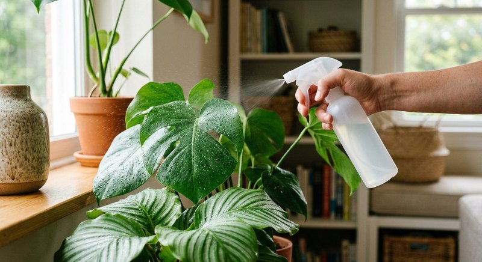

Состав и дозировка · 2 мин чтения
Можно ли опрыскивать растения удобрением: правила безопасности
Опрыскивать растение удобрением можно только тогда, когда на этикетке прямо указан внекорневой способ. Не каждое средство и не каждый вид растения подходит для листовой обработки.
Материал обновлён 24.10.2026 · Справочная информация, не заменяет инструкцию на упаковке.

Проверьте инструкцию и вид растения
На упаковке должна быть указана возможность применения по листу и точная дозировка. Убедитесь, что ваш вид входит в назначение. Опушённые, очень нежные или чувствительные листья могут плохо переносить влагу и растворённые вещества.
Не путайте удобрение с обычным опрыскиванием водой для влажности воздуха. Подкормка содержит растворённые компоненты, поэтому избыток или неподходящий состав способен оставить следы или повредить листовую пластину.
Как провести пробную обработку
Разведите раствор по норме для опрыскивания, а не для корневого полива. Сначала обработайте небольшой участок или один лист и понаблюдайте за реакцией. Не смешивайте концентрат с другими препаратами без подтверждённой совместимости.
Не распыляйте под прямыми солнечными лучами или в жару. Избегайте скопления крупных капель, нежных цветов и мест, где раствор может долго оставаться на листе. Точные условия берите из инструкции выбранного средства.
Когда лучше выбрать полив
Если инструкция не разрешает опрыскивание или вид имеет чувствительные листья, используйте корневой способ, если он указан производителем. Не пытайтесь компенсировать слабый рост частой внекорневой обработкой.
Для Семяздрава в предоставленном описании разрешены полив и опрыскивание. Это не означает, что дозировки для способов одинаковы: проверьте актуальную этикетку и выберите вариант, подходящий вашим растениям.
Частые вопросы
Можно ли опрыскивать удобрением на солнце?
Не следует делать это без прямой рекомендации производителя: сильный свет и жара повышают риск повреждения листьев.
Нужно ли опрыскивать нижнюю сторону листьев?
Следуйте способу применения на этикетке. Важно не заливать листья и не обрабатывать растение неподходящим раствором.